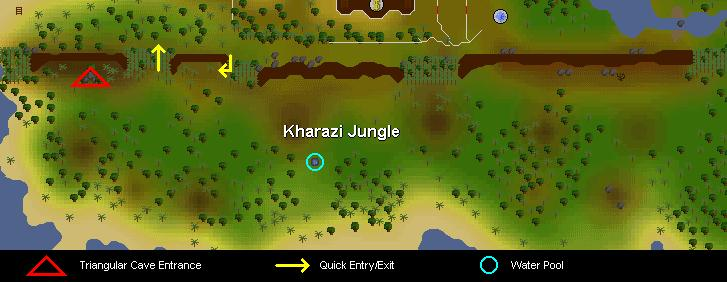
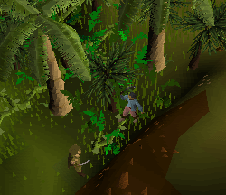
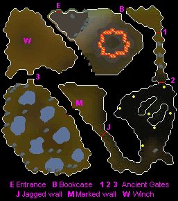
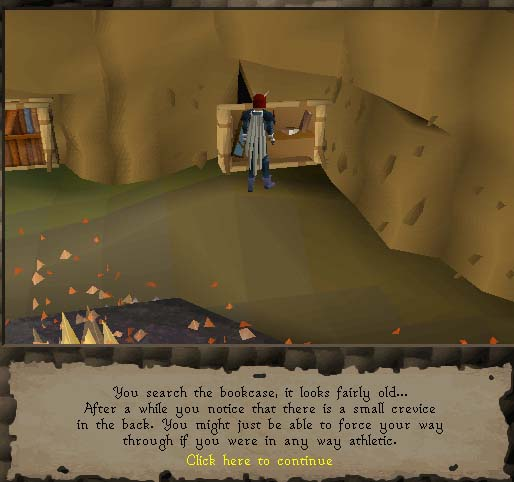
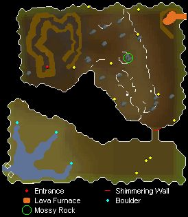
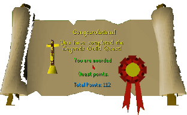

Legends Quest
Description: Accept the challenge of the Legends Guild to map the Southern part of Karamja Island, make friends with the natives and bring back a prize to display in the Legends Guild Main Hall.Difficulty: Experienced
Length: Long
Required Quests:
- Family Crest
- Hero's Quest
- Shilo Village
- Underground Pass
- Waterfall Quest
Items & Skills Needed:
- 107 Quest points
- 50 Strength
- 42 Prayer
- 56 Magic
- 50 Agility
- 45 Herblore
- 50 Thieving
- 50 Crafting
- 52 Mining
- 50 Smithing
- 50 Woodcutting
- The ability to defeat a level 187 demon
Recommended:
- Your best weapons, armor, and food
Starting Location: Talk to Radimus Erkle in Legends' Guild
Reward: 4 Quest points, 7,650 experience each in four skills of your choice (limited to Attack, Defence, Strength, Hitpoints, Prayer, Magic, Woodcutting, Crafting, Smithing, Herblore, Agility, Thieving; it is possible to choose the same skill all four times), access to the Legends' Guild (including shop to buy the cape of legends), the ability to wield the dragon sq shield, you can now receive the Rune spear, Dragon spear, and Shield left half from the Gem drop table
Instructions:
Talk to Radimus Erkle in his office at the Legends' Guild. You will receive 3 tasks to accomplish: complete a Map of the Kharazi Jungle, make friends with the Natives, and bring a symbol from the Natives back to the Guild. He provides the Radimus Notes.
Search the cupboard and take the machete (can also be purchased in Shilo Village). Grab some papyrus from the table spawn or buy 3 at the general store in East Ardougne or Shilo Village.
Either use a few coal over a fire to make charcoal, or purchase 2 or 3 at the Shilo Village shop (it can break while you draw).
Head to any Kharazi Jungle Entrance south of Shilo Village and talk to any Forester outside the jungle wall. He says that if you show him something impressive, he will give you a "special item."

Cut your way into the impressive jungle wall using a Machete and a hatchet. Do not forget the Radimus Notes.

Random enemies you may encounter include the Jungle Savage (Lvl 90), Jungle Wolf (Lvl 64), and the chicken-like Oomlie Bird (Lvl 46).
Now start mapping the jungle. Map the Western, Eastern and Middle area — a message will show the section in green when an area is complete; if you fail, just try again. Exit the jungle and show the complete Radimus Notes to the Forester. He will be so impressed that he will give you a Bull roarer, if you let him copy your notes.
It is not required, but if you had difficult random enemy encounters it's optional to restock food at Shilo Village now. Ditch any leftover Charcoal and Papyrus, but keep the new Bull roarer for the next step. The map, Machete and hatchet are required for all entries into the forest.
Head back into the jungle and swing your Bull roarer and a Native named Gujuo will appear. * note: swinging the Bull roarer does not guarantee he will show up the first time; sometimes you will attract monsters or nothing at all. Talk to him and try to get friendly with him. He will tell you that he needs help to rescue Ungadulu.
Search near the jungle wall and you will see 3 rocks in a triangle [marked with red triangle on Kharazi Jungle map shown]. Search any of the rocks and climb down. You may fail and take damage, so keep trying.
This is the first level of the dungeon.

You will see a guy trapped in an octagonal fire wall. Investigate the flames and talk to Ungadulu; he will tell you that only Holy Water will douse the flames. Return to the surface and call Gujuo.
Gujuo will tell you that only a bowl made of the metal of the sun will hold the water. Of course the metal of the sun is gold. Gujuo will make you a sketch of the bowl.
Take the sketch and at least 2 gold bars with hammer to any anvil. Use gold bar with anvil and make the bowl. Failing this will consume 2 gold bars.
The next steps require the bull roarer, the golden bowl, lockpick, pickaxe, the SMELL runes and the 7 gems, in addition to the minimum Kharazi equipment of hatchet, machete and map. A prayer pot and a stat restore pot may be helpful, as well as some food. Armor is only needed to protect you from the random jungle enemies (listed in Step 3) and a small cave of Death Wings (level 83). Aside from these and Ungadulu, you may take small damage from agility obstacles.
Return to the Kharazi Jungle and Bull Roar for Gujuo. To bless the bowl, talk to Gujuo and you will do some funny singing. If you fail, you will lose some prayer; you need at least 42 prayer points to bless the bowl.
Use your machete on a reed near the Water Pool (circled on map) to get a hollow reed. Use it on the water pool to fill your blessed bowl with pure sparkling water.
Head back into the cavern and douse the flame; search the desk and find the Shaman's Tome. Read it, but it does not help much. Now talk to Ungadulu. There's something wrong with him. He will throw you out of the octagon and reduce your Prayer stat.

Search the northeast bookcase and enter.
Use your Lockpick on the Ancient Gate
Proceed to smash the three boulders (requires pickaxe). If you fail, just try again.
Use your strength to push through the next Ancient Gate! If you fail, you will lose some strength; you need at least 50 strength points to get through. Notice the time it takes to get through the dialog while opening this gate; on the return trip you may be attacked by Death Wings (level 83) that you may have to kill before you will have enough free time to get through the dialog sequence.
Now go all the way south through the cave of Death Wings, then continue southwest and then northwest around the bend and jump over the Jagged Wall agility obstacle.
Further along the west side of this corridor you will discover a Marked Wall. Search it and you will get a riddle hinting what order to insert the runes to unlock the passage. The runes to use are 1 soul rune, 1 mind rune, 1 earth rune, and 2 law runes, which spells "SMELL".
Now pass through the Marked Wall to an area of 7 water pools with stalagmites. Use each gem on a stalagmite to find which one is correct — if it is not, it will say "Nothing interesting happens." There are no failure penalties, just keep trying. When you walk away after a successful placement, the game text says the gem starts to fade; this is normal. When each gem is in the right spot, the gems will appear and glow to rebuild the Book of Binding. Grab it and read it — it tells how to defeat the demon.
The below paragraphs explain how to enchant vials and make Holy Water. Note that this section is optional because most players fight the demon without doing this, and the few people who have done it were unimpressed with the performance of the Holy Water (it hits no better than a dragon battleaxe).
The last pages of the Book of Binding concern enchanting empty vials to fight the demons. On the last page click on the bold word "Activus". It then asks how many vials you wish to enchant. Be warned: enchanting consumes 5 prayer and 4 magic for each vial!
To make vials of Holy water, use the blessed bowl of pure water (filled with pure sparkling water from the spring) on an Enchanted vial.
Note that the water in the blessed bowl evaporates when you leave Kharazi forest, so you cannot make Holy water elsewhere (regular water doesn't work). Also note that after you fight the demon the first time, the spring becomes contaminated. You cannot make any more vials of Holy water until you defeat the demon the second time. Plan accordingly!
To use the Holy water vials on the demon, wield them as a weapon (evidently it is considered a Ranged weapon because it is thrown). They have been observed to hit from 0 to 15.
It is strongly recommended to bring several prayer pots when you go to kill the demons. The first thing they do is heavily drain your prayer, leaving you without your prayer protection. After the prayer drain, restore your prayer with a potion and turn on appropriate prayer protection for each demon battle.
Now head back to Ungadulu and prepare for battle. Equip Silverlight or your Holy Water vials, drink your Super set now, and then use the Book of Binding on Ungadulu. A level 187 demon will appear and he will attack you, draining your prayer right away. Drink Prayer potions, then turn on Protect from Melee for this battle.
After you defeat the demon, Ungadulu will reward you with some Yommie Tree Seeds. Talk to him and ask how you could get out. He will cast an enchantment on you to protect you against the fire. You can now pass freely across the flames in the octagon.
Return to the surface and try to get water from the pool; you will see it is filled with murky water. (You may have to germinate your seeds with holy water before the pool becomes murky.) Bull Roar for Gujuo.
Gujuo will tell you that you need to go to the Holy Water source to see what happened, and for that you need to make a Bravery potion which will make you brave enough to enter the deep cave section. For that potion you will need 2 herbs which are: Snake Weed and Ardrigal. [Roughly, the Snake Weed is southwest of Tai Bwo village; search the vines near the water. Search palm trees on beach northeast of Tai Bwo village for Ardrigal.]
Make the Bravery Potion by using Snake Weed on a Vial of water and then using Ardrigal on it. The potion will look like murky water.
The next steps require the Bravery potion, Rope, Lockpick, pickaxe, Unpowered orb, and the Charge orb runes, in addition to the minimum Kharazi equipment of hatchet, Machete and map. Wield your best armor and weapon, as you will have to fight several high-level enemies. Holy water vials or Silverlight are optional when fighting the demon, but if you plan to go for the Holy Force spell, you can postpone bringing these since you will have time for another bank run after you speak to Ungadulu (though this will cost you a second Casting of Charge Orb). Prayer potions and food are recommended. Expect to take damage from agility obstacles.
Make your way back to the gems spot where you got the Book of Binding. Go to the Ancient Gate on the north wall and cast a Charge Orb spell — it does not matter which one you use. Note that you must re-cast this spell each time you wish to pass this gate, so always remember to pack the necessary runes and an Unpowered orb.
Now you will see a winch. Use your rope on it BUT before going down, drink your Bravery potion. Your rope will remain in place for all future uses of this winch; just search to reveal it. If you forgot your rope, you can smash the barrels until you find one, but they may also release damaging explosions and various enemies (bat, hobgoblin, spider, etc.) The Bravery potion is only needed the first time.
This is the second level of the dungeon.

Take the strange looking blue hat on the ground. A Ghost named Viyeldi will appear. Talk to him.
Climb down the rock that looks like stairs. This narrow cliff path is a gauntlet of rockslide agility obstacles which may inflict damage.
Wandering the cavern below are the spirits of three long dead warriors: San Tojalon (level 106), Irvig Senay (level 100), and Ranalph Devere (level 92). Kill one of each to get 3 different pieces of crystal.
Now go the northeast corner and use your crystal parts together on the lava furnace to make a heart-shaped crystal.
At the center of the cavern (on the mini map it looks like the dragon's "eye"), find a mossy rock that you can 'Search'. Search it, then use your crystal on it and the crystal will start to glow.
Now use your crystal on a symbol in the wall in the southeast corner of the cavern. The crystal will fit perfectly and you will be able to pass through the Shimmering Wall.
Now run West past the three Lesser Demons (level 82) and try to push a boulder at the water's edge. A ghost will appear and ask you to help him by killing Viyeldi.
The ghost will give you a black dagger, so equip it. At this point you have 2 options:
Option 1 - (Shorter but Harder Boss fight)
Go back where the blue hat was and attack Viyeldi. The dagger will begin to glow so go back to the ghost and prepare to fight. Drink potions now and use the dagger on the ghost. If the ghost just disappears, push the rock it will appear again. Now you will have to kill the demon again, but this time he reduces all your prayer, so use Prayer potion(s). If choosing this option, skip the next two steps below.
Option 2 - (Longer but Easier Boss fight)
If you are going for the Holy Force spell, pass Viyeldi and head back up to Ungadulu and show him the dagger (Use it on him). He will give you a Holy Force Spell which will help you when you fight the second demon. While up here, you might as well bank for more food, another orb and the runes for the Cast Orb spell to re-open the third Ancient Gate; you don't need another rope, and you won't have to fight the warriors again. Holy water vials and Silverlight are optional for fighting the demon.
After your bank trip, go all the way back to the springs at the end of the second level of the dungeon, push the boulder, and use the Holy Force Spell on the spirit. It will transform into the demon who must be defeated a second time (Silverlight and Protection from Melee are recommended). This way you would not have to kill Viyeldi, the demon will be weaker, and you will not have to fight the 3 warriors again when you get to the final demon battle below.
Now push a boulder. After you move it, use your bowl on the Holy Water spot. Use your Holy Water on Yommie Tree Seeds to germinate them and fill your bowl with Holy Water again. Now get back to the surface. [If you do not have your blessed bowl with you, you can refill it later on the surface since your movement of the boulder will refresh the Water Pool.]
This step requires your rune hatchet, the Yommie Tree seeds and a Blessed bowl full of Holy Water (in addition to the normal Kharazi equipment).
Bull Roar Gujuo and tell him you have germinated the Yommie Tree Seeds and he will tell you that you need to find fertile soil. Search for fertile soil (dark brown spots on the ground) and use a seed on it. A tree will grow — when it becomes a young tree and needs water, use Holy Water on it and the tree will become an adult.
Now do this fast: use your Rune axe (hatchet) on it a few times until you get a Totem Pole; do it fast or the tree will die. Raise your totem pole and pick it up. It is so heavy that you may lose some strength.
This step is the final battle, so in addition to having your Totem Pole, be prepared with your best armor and weapon (optionally Silverlight for the demon), optional Holy water vials, Super Set of potions, prayer potions, and/or high-level food.
Search for a Dark Totem Pole [there is one east-northeast of the water pool, but they are scattered throughout the jungle]. Use your Totem Pole on the Dark one.
If you chose Option 1 above, the Demon will appear and you will again have to fight the 3 warriors from the cave — the levels 106, 100 and 92. **If you went for the Holy Force spell, you would not have to kill the 3 warriors, just straight to the demon.** Again, the demon will drain your prayer right away, so save your Prayer potions until that happens. Protect against Melee prayer is recommended for this battle.
After vanquishing the demon for the final time, use your Totem Pole on the Dark totem pole again. Gujuo will appear and thank you for your efforts. He will give you a Gilded Totem Pole.
Return to Radimus Erkle at the Legends' Guild. He will see the Gilded Totem and be impressed. He will then ask you to meet him inside the guild.
Speak to Radimus Erkle inside the Legends' Guild. He will offer you 4 lots of 7,650XP. After you claimed all of the XP:
Congratulations, Quest Complete!

This quest guide was written by j1j2j3 and trekkie. Thanks to avster and blue komoto for pictures; monkeymatt for converting maps; pokemama for edits, information on enchanted vials, and maps; Kidd, Dravan, Freakybat, Mage101, DNKevin, pj, stormer, Nitr021, and dogs major for corrections.
This quest guide was entered into the database on Sat, Apr 10, 2004, at 07:23:28 PM by Kidd and CJH and was last updated on Sat, Mar 19, 2005, at 01:58:58 PM by dravan.